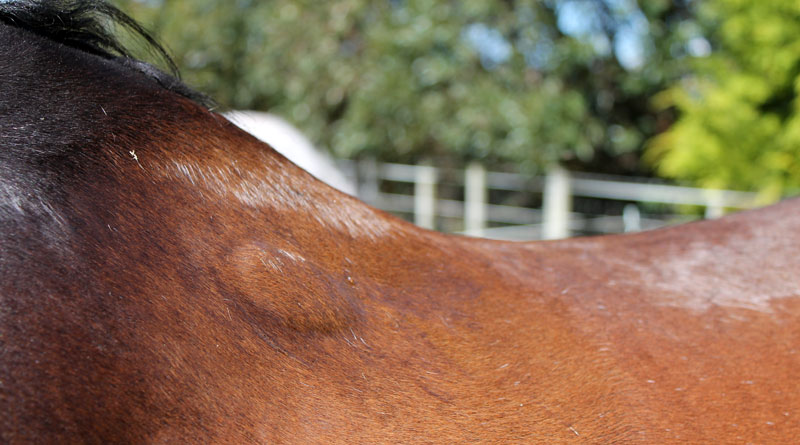
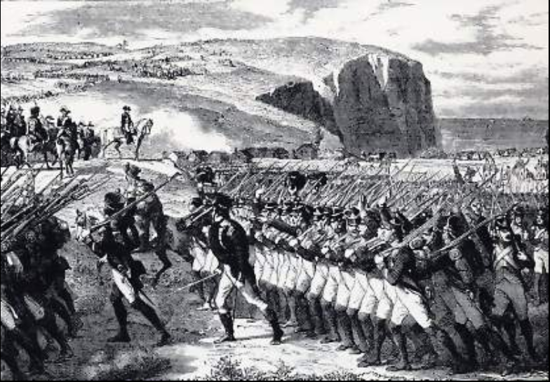
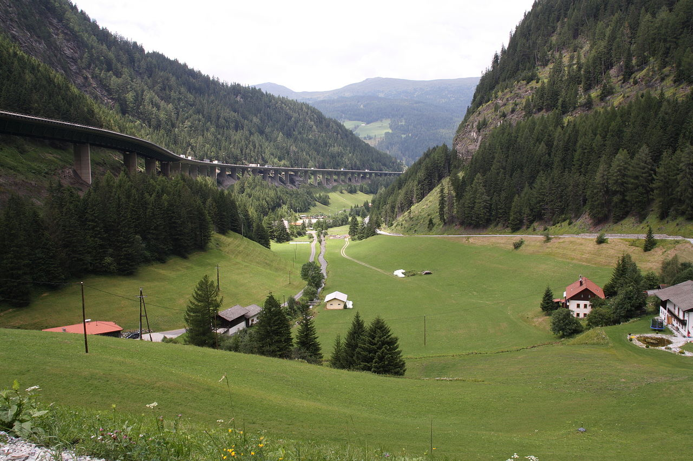

1812년 그랑다르메(Grande Armée)의 내부 상황 (2편)
게시: 2019-09-23T06:30:22+09:00
일단 프랑스나 폴란드는 물론, 나폴레옹의 오랜 동맹국이었던 바이에른이나 바덴, 뷔르템베르크, 작센 등 독일 출신 병사들은 나폴레옹과 승리에 대한 확신이 있었으므로 이번에도 좋은 결과를 얻을 것이라고 믿고 있었습니다. 원래 독일은 신구교간의 종교 차이도 있고 해서 남북간 지역 감정이 심한 곳이었습니다. 그러다보니 이런 남부 독일 출신들은 딱히 프랑스인들을 매우 좋아하는 편은 아니었지만 그래도 프랑스에 대한 미움보다는 프로이센에 대한 혐오감이 더 심했습니다. 반면에 주로 헤센(Hessen)과 옛 프로이센 영토로 새로 편성된 베스트팔렌 왕국 병사들, 즉 북부 독일 출신의 병사들은 이렇게 프랑스군에 편입되어 전쟁터로 나갈 때 별로 기분이 좋지는 않았습니다. 1812년 1월, 베스트팔렌의 총리는 전쟁 준비에 대해 프랑스의 외무장관 마레(Maret)에게 보고하는 편지 속에서 다음과 같이 우려했습니다. "병사들의 충성심은 믿을만 합니다. 그러나 그들은 전사할지도 모른다는 두려움보다 오히려 먼 타국으로 떠나야 한다는 사실 자체를 더 싫어합니다. 병사들이 반란을 일으킬 가능성은 없다고 생각됩니다만, 전쟁 초기에 그들의 그런 감정이 일으킬 말썽은 주로 대규모 탈영의 형태로 나오지 않을까 우려됩니다." 옛 프로이센 영토 출신의 독일인들의 감정이 이런 상황이었으니, 현직 프로이센 병사들의 심정은 말할 것도 없었습니다. 이들은 모두 나폴레옹과 프랑스군을 혐오했습니다. 따라서 나폴레옹의 적이 패배한다는 것은 프로이센에게 결코 유쾌한 일이 아니었습니다. 더군다나 그런 싸움에서 자신들이 피를 흘려가며 나폴레옹을 도와야 한다는 사실은 매우 분통이 터지는 일이었습니다. 그럼에도 불구하고 프로이센군조차 반란이나 대규모 탈영같은 저항 행위는 별로 생각하지 않고 있었습니다. 이는 크게 2가지 때문이었는데, 하나는 '야만스러운 러시아인들을 유럽 무대에서 완전히 쫓아내버린다'라는 나폴레옹의 빅 픽처가 중서부 유럽 출신 병사들에게 어느 정도 공감을 샀기 때문이었고, 다른 하나는 '군인의 긍지' 때문이었습니다. 프로이센 경기병대의 지텐(Ziethen)이라는 대령이 어느 폴란드 장교에게 이런 말을 했다는 기록이 있습니다. "우리가 이제 싸울 전쟁은 프로이센의 국익과 상충한다는 것을 잘 안다오. 그래도 군인으로서의 명예를 지키기 위해서라면, 내 몸이 산산조각나는 한이 있더라도 당신 옆에서 싸울거요." 베스트팔렌이나 프로이센 출신보다 더 대규모 탈영이 우려되는 부대는 나폴레옹의 매제 뮈라(Murat)가 꽤 오래 다스린 이탈리아 남부 지방 '나폴리 왕국'군이었습니다. 이미 그때도 이탈리아는 남북간의 격차 및 지역 감정이 꽤 심했나 봅니다. 나폴레옹이 직접 국왕으로 있던 북부 이탈리아 지방의 '이탈리아 왕국'군은 매우 우수한 부대로 인정받았고 병사들이나 장교들 스스로도 자신들이 고대 로마 제국의 진정한 후손이라는 긍지를 가지고 있었습니다만, 나폴리 왕국군에 대해서는 대부분의 프랑스 지휘관들이 '군인으로서는 아무짝에도 쓸모가 없다'라는 평가를 내리고 있었습니다. 나폴레옹도 이렇게 억지로 머릿수만 잔뜩 채운 군대가 최고의 전쟁 기계라고는 생각하지 않았습니다. 그러나 나폴레옹은 확실히 전쟁을 아는 사람이었습니다. 그는 기병대원들의 상당수가 말도 제대로 탈 줄 모르는 미숙련 기수라는 것을 보고하는 부관에게 다음과 같이 말했습니다. "기병대 4만을 편성할 때 그렇게 많은 기병대원들이 모두 훌륭한 기수일 수는 없다는 것을 나도 잘 알아. 내가 기대하는 것은 우리의 숫자가 적의 사기에 미치는 영향이야. 적군은 스파이든 소문이든 신문 기사이든 무슨 방법으로든 내게 기병대가 4만이나 있다는 것을 알게 되거든."

(요즘 운전을 할 줄 아는 젊은이들 수자보다 당시에 말을 탈 줄 아는 젊은이들 수자가 훨씬 더 적었을 것입니다. 그러다보니 새로 징집된 기병들 중 상당수는 칼춤을 추기는 커녕 그저 말에서 떨어지지 않고 붙어만 있어도 다행이었습니다. 이런 미숙련 기병들이 당장 만들어내는 문제는 안장 밑의 상처(saddle sore)였습니다. 말을 제대로 돌볼 줄도 모르고 말 위에서 제대로 자세를 잡지도 못한 채로 장시간 말을 탔으니, 기병의 엉덩이도 아팠지만 말도 안장에 쓸려 등에 저런 상처와 부종 등이 생기는 경우가 많았다고 합니다. 이런 상처와 부종을 제때 돌봐주지 않으면 결국 피도 나고 곪아서 더 큰 문제를 일으켰습니다.)
하지만 적군에게나 아군에게나 사기에 가장 큰 영향을 주는 요소는 바로 나폴레옹 본인이었습니다. 나폴레옹의 참모로 배속되었던 독일 출신 장교인 폰 펑크(Karl von Funck)에 따르면 이랬습니다. "자신들이 무적이라는 믿음 자체가 그들을 무적으로 만들었다. 어떻게 되든 결국 끝에는 그들이 지고 말 것이라는 생각에 적군의 사기가 제풀에 꺾이는 것도 같은 이유였다." 제9 폴란드 창기병 연대에 배속되었던 독일 장교인 폰 베델(Count von Wedel) 중위도 나폴레옹의 존재 자체가 마법과 같은 효과를 낸다고 적었습니다. "이 원정에 참여하는 나라들 중 3/4은 이 전쟁을 결정한 사람들과는 정면으로 이해가 충돌되는 관계에 있었다. 실제로 상당수의 사람들은 러시아가 이기기를 속으로 바라고 있었지만 실제로 위험이 닥치자 마치 다들 자기 집을 지키는 것처럼 열정적으로 싸웠다. 황제에 대한 각자의 개인적인 감정들이 전에는 어떤 것이었든간에, 나폴레옹이 세상에서 가장 위대하고 유능한 지휘관이라는 것을 부정하는 사람이 없었고 그의 재능과 판단에는 모두가 확신을 가졌다. 그의 위대함이 뿜어내는 아우라에는 나도 저절로 감화가 되어 다른 모든 이들과 마찬가지로 나도 열정과 경외의 감정을 담아 '황제 폐하 만세(Vive l'Empereur) !'를 외쳤다."
나폴레옹을 멀리서 쳐다보기만 해도 이런 감정이 치솟는데, 나폴레옹이 자기에게 말이라도 걸어준 적이 있다면, 혹은 나폴레옹이 자기와 같은 솥단지에서 수프를 먹었다면, 그 감격은 이루 말할 수 없는 것이습니다. 피에몬테(Piemonte) 출신의 칼로소(Calosso)라는 이탈리아인 기병 장교는 나폴레옹이 사열을 하다가 그의 앞에 멈춰 서서 그에게 (아마도 나폴레옹의 모국어인 이탈리아어로) 몇마디를 건네는 영광을 누리고 이렇게 적었습니다.
"그날 그 사건 이전에는 난 그저 다른 모든 사람들이 존경하는 것처럼 나폴레옹을 존경했다. 하지만 그날 이후로 나는 영원히 변치 않는 열정으로 그에게 내 목숨을 바쳤다. 그 점에 있어서 난 딱 한가지가 후회스러웠는데, 그건 황제께 바칠 목숨이 하나 밖에 없었다는 것이었다."

(나폴레옹이 저 멀리서 보고만 있어도 자기가 쥔 머스켓 소총이 7.62mm 기관총으로 변하는 것 같은 느낌적 느낌 !)
이에 대해서는 러시아 측에서도 인정하는 사람들이 꽤 많았나 봅니다. 한 러시아 장교에 따르면 당대를 살아보지 않은 사람은 나폴레옹이 동시대 사람들에게 가지고 있던 정신적 지배력이 얼마나 대단했는지 상상할 수 없을 것이며, 적이건 아군이건 마치 어떤 요술처럼 그의 이름 자체에서 무한정의 힘이 있는 것처럼 느꼈다고 합니다. 게다가 프랑스군은 물론, 이탈리군이나 독일군이나 원주둔지를 떠나 네만 강 서쪽으로의 행군길은 그렇게 나쁘지 않았습니다. 각 부대는 통과하는 지역의 지형에 따라 어떤 경우는 하루에 15km, 어떤 경우엔 35km까지도 주파했습니다. 다년간의 원정 경험을 가진 프랑스군 병참부의 일처리는 매우 뛰어나서, 각 부대에게는 어느 날짜에 출발해서 언제까지 어디에 도착해야 하는지의 일정표가 상세히 주어져 있었습니다. 이들은 어떻게든 주어진 날짜에 주어진 도시나 마을에 도착해야 했고, 도착하면 정해진 절차와 체계화된 서류 작업을 통해 숙소를 배정 받았습니다. 대개의 경우 일반 시민들의 집에 각 가정의 사정에 따라 병사들을 2~3명씩 혹은 5~6명씩 숙영(billeting)시켰지요. 병사들의 식량은 계약된 종군 상인들에 의해 미리 준비되어 있다가 각 부대의 부사관 등이 전표를 들고오면 지급되었습니다. 모든 것이 꽤 체계적이었습니다.

(이탈리아와 오스트리아를 잇는 알프스의 고갯길인 브레너패스(Brennerpass) 입니다.)
상황이 이렇게 순조롭다보니 분위기는 그리 나쁘지 않았습니다. 엘바(Elba) 섬 출신의 체사레 데 로지에(Cesare de Laugier)라는 군인의 기록에 따르면 브레너(Brenner) 고갯길을 넘어 이탈리아에서 오스트리아 쪽으로 넘어가는 행군은 마치 명랑하고 즐거운 군사 행렬 같았다고 합니다. 작센 출신의 폰 미어하임(von Meerheimb) 중위에 따르면 그는 고향 땅을 떠나게 되어 처음에는 눈물까지 흘릴 정도로 슬퍼했지만, 일단 행군 대열에 합류해보니 부대 전체 분위기는 흥겹고 가벼운 농담이 넘쳐났으며, 심지어 들르는 마을이나 도시에서 만난 아가씨들과의 짧은 연애도 꽤 흔했다고 합니다. 그러나 이런 낙천적 분위기는 폴란드에 진입하자 싹 바뀌었습니다. Source : 1812 Napoleon's Fatal March on Moscow by Adam Zamoyski